Instalación Usuarios Premium
Paso 1: Instalación de Launcher
Ingresamos a la página oficial de CurseForge y descargamos el launcher utilizando Overwolf.
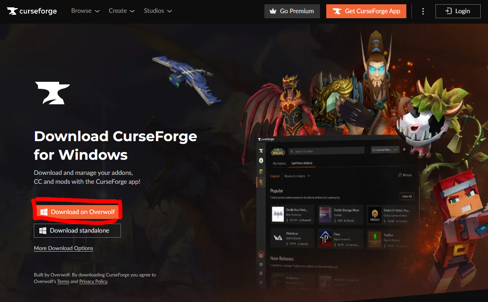Una vez abierto el programa podremos leer la bienvenida que nos da CurseForge o simplemente saltar dicha introducción.
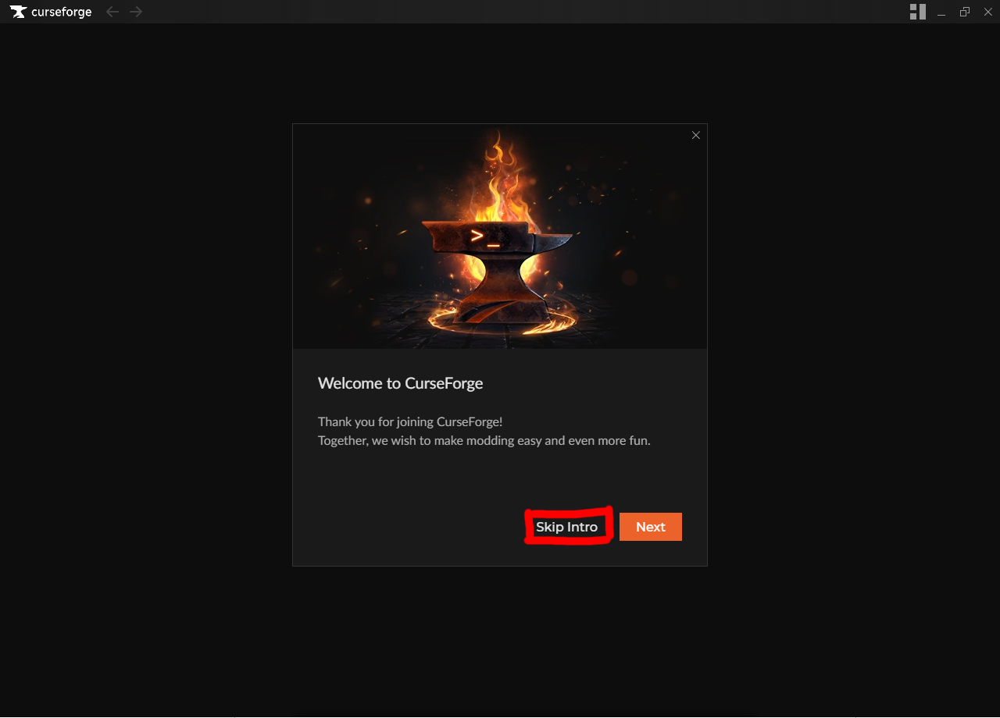En caso de querer iniciar sesión lo hacemos, de lo contrario continuamos como invitados (Continue as guest).
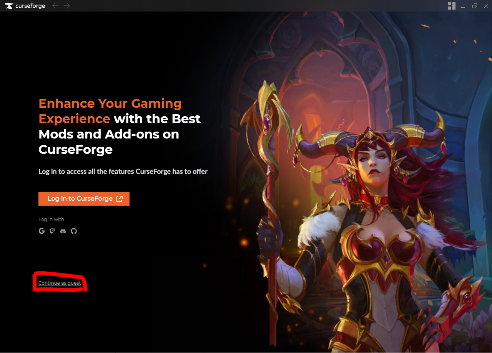Paso 2: Crear Instancia
Lo primero que veremos será una gran variedad de juegos, el que necesitamos en este caso es Minecraft.
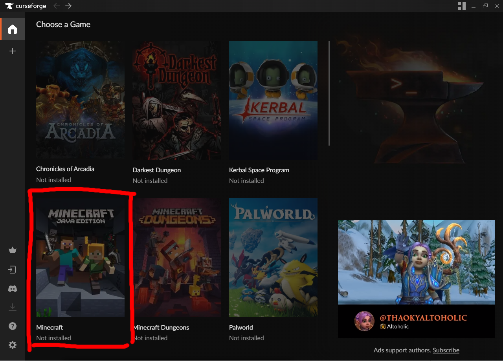Una vez elijamos la ruta de instalación podremos buscar el modpack deseado presionando en Browse Modpacks.
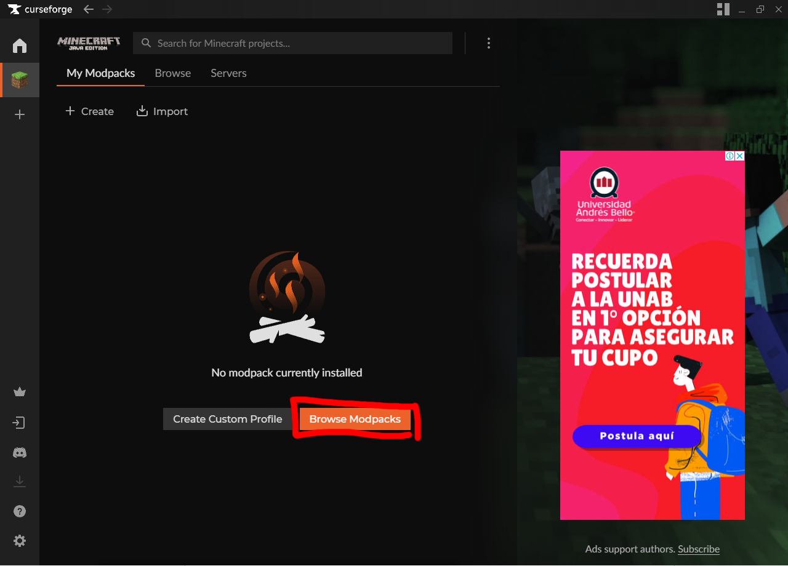El modpack necesario en este caso será el Better Minecraft, para esto escribiremos sus siglas de BMC5.
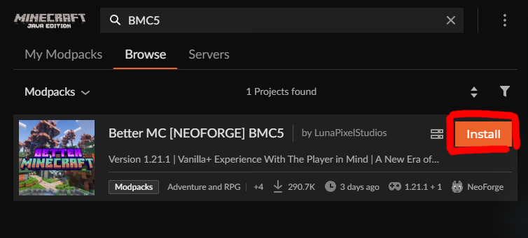Presionaremos en Install y esperamos a que se descargue completamente.
Paso 3: Configurar Instancia
Una vez todo instalado le asignaremos más RAM a nuestra instancia, esto debido a la cantidad de mods y el mal rendimiento que tiene Java.
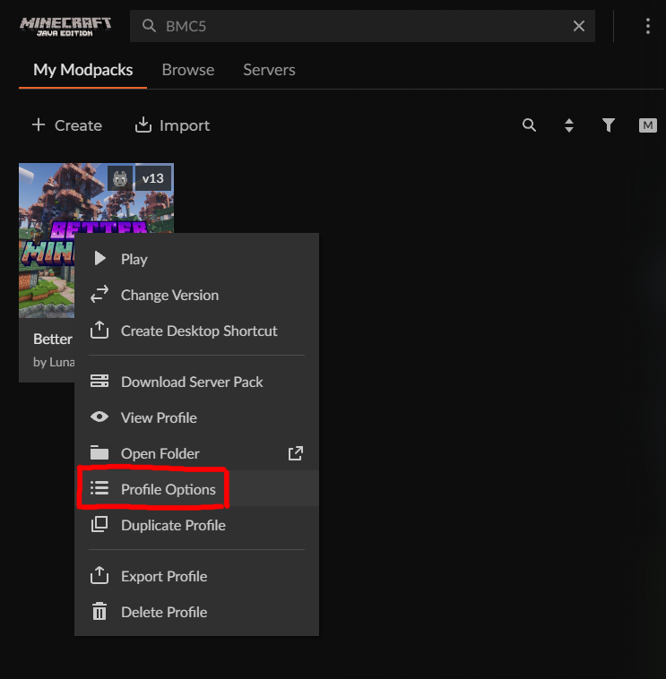Dentro de Profile Options desmarcamos la casilla “Use System Memory Settings”.
Dependiendo de tu RAM (en caso de no saber tu RAM, consulte en #dudas):
| CANTIDAD DE RAM | CANTIDAD DE RAM A ASIGNAR |
|---|---|
| 8GB | 4GB o 6GB |
| 16GB | 8GB o más |
| 32GB | 10GB o más |

Paso 4: Agregar Mods Extras
Una vez asignada la memoria, agregaremos los mods extras a la instancia, para esto abriremos la carpeta del modpack.
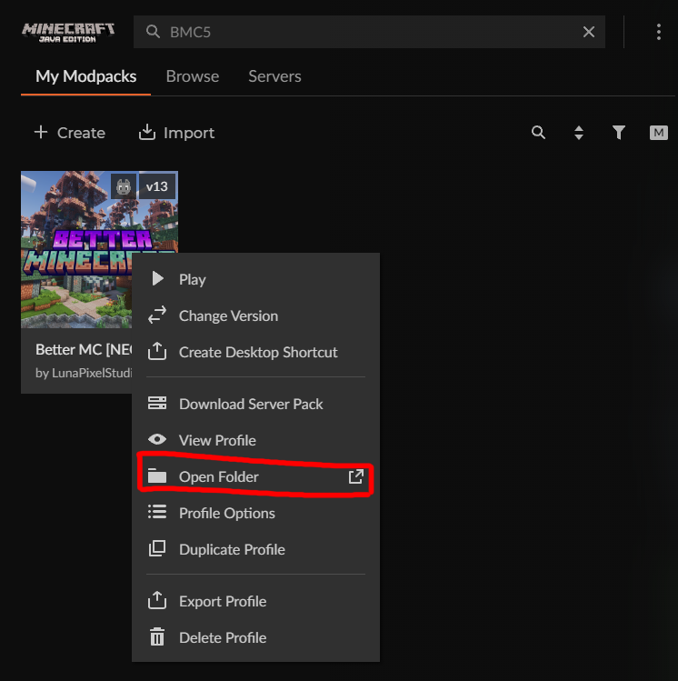Entramos a la carpeta de mods y pegaremos los 4 mods que están en el canal de Discord a la carpeta mods.
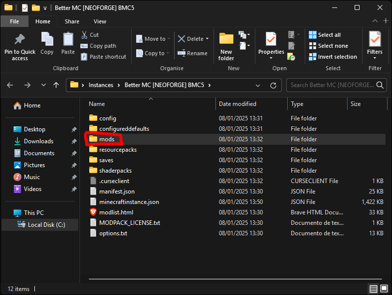 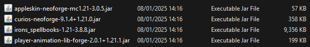 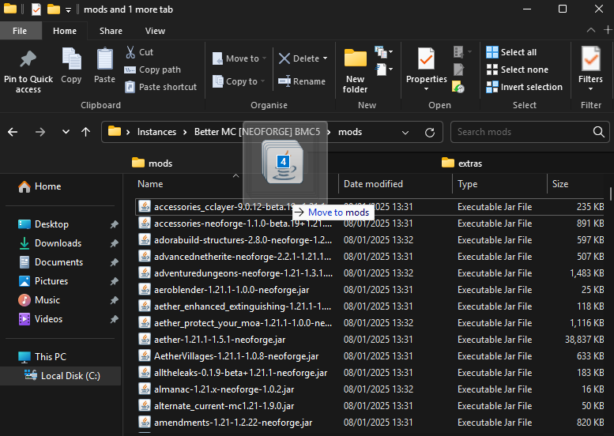Paso 5: Jugar
Para finalizar la configuración Premium iremos a multiplayer y añadiremos el server con la IP: noxmera.holy.gg

 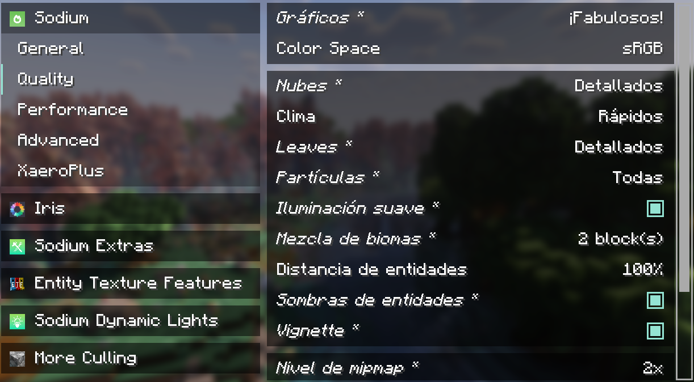
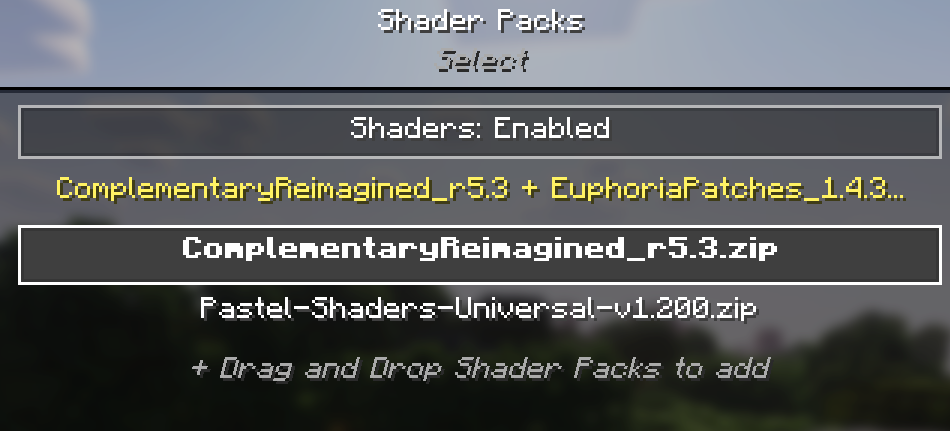
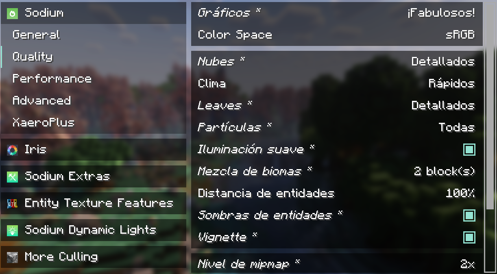
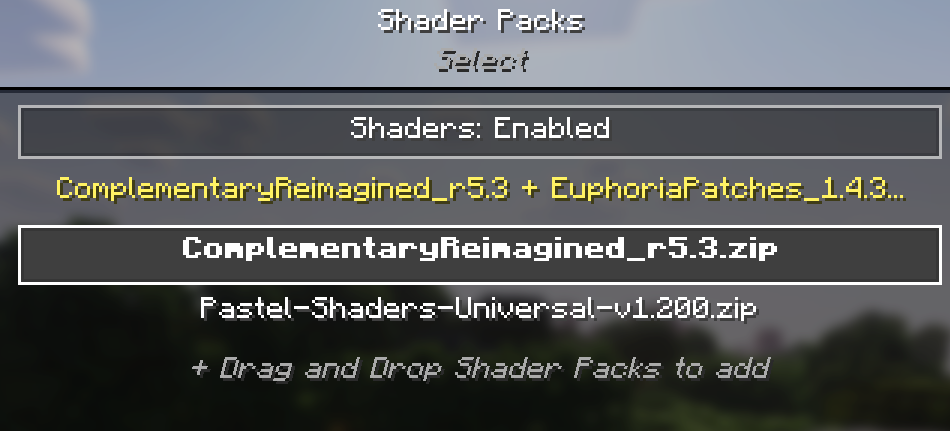